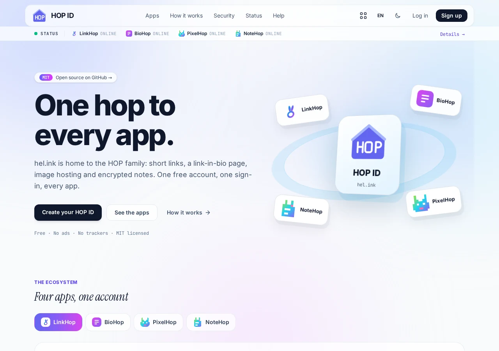
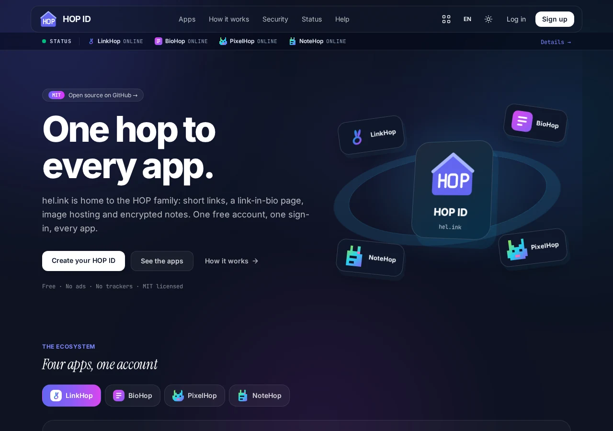

HOP · Хаб семейства и портал аккаунтов
Один аккаунт HOP для каждого приложения.
HEL.ink — портал аккаунтов и каталог семейства HOP. Войдите один раз с помощью HOP ID и свободно переходите между LinkHop, BioHop, PixelHop и NoteHop.
Свободное программное обеспечение с открытым кодом по лицензии MIT.
Возможности
- Единый вход (HOP ID)
Один вход действует во всех приложениях HOP. Подписанные билеты и цепной выход поддерживают согласованность всех сеансов.
- Единый запуск приложений
Переключайтесь между LinkHop, BioHop, PixelHop и NoteHop одним щелчком откуда угодно.
- Общая архитектура базы данных
Одна база MySQL или SQLite хранит все учётные данные, у каждого приложения — своя таблица миграций.
- Надёжная защита аккаунта
Хеширование Argon2id, двухфакторная аутентификация TOTP, защита от ботов Cloudflare Turnstile и подтверждение адреса почты.
- Наблюдение за сервисами в реальном времени
Автоматические проверки состояния и мониторинг задержек во всех приложениях без раскрытия секретов.
- Общие ресурсы семейства
Официальные знаки, шрифты Inter, Instrument Serif и JetBrains Mono и 3D-ресурсы отдаются с hel.ink с SRI-хешами.
- Токены API с точными правами
Создавайте служебные токены с ограниченными правами для обмена между приложениями и автоматизации.
- Полностью можно развернуть у себя
На 100 % бесплатно и с открытым кодом. Запустите один хаб или всё семейство HOP на одном VPS.
Запустите свой хаб
Свободное программное обеспечение с открытым кодом по лицензии MIT.
HOP ID


Частые вопросы
Что такое HOP ID?
HOP ID — центральная служба аутентификации семейства HOP. Один аккаунт позволяет входить в LinkHop, BioHop, PixelHop и NoteHop.
Можно ли запустить хаб без других приложений?
Да. Хаб может работать как отдельная служба входа и каталога, но лучше всего раскрывается вместе с приложениями HOP.
Как работает единый выход?
При выходе из хаба ваш локальный сеанс завершается, а подключённым приложениям отправляются цепные сигналы выхода.
HEL.ink — это открытый код?
Да, HEL.ink и все публичные приложения HOP выпускаются по свободной лицензии MIT.
Семья HOP
HEL.ink — хаб семейства веб-инструментов с открытым кодом, уважающих приватность.
| Сервис | Назначение | Действующий адрес | Код |
|---|---|---|---|
| HOP ID | Портал аккаунтов, вход по HOP ID | hel.ink · hub.hel.ink | этот репозиторий |
| LinkHop | Сокращатель ссылок и QR-коды | link.hel.ink · hel.ink/l/{slug} | navi-crwn/LinkHop |
| BioHop | Страницы «ссылки в профиле» и темы | bio.hel.ink · hel.ink/b/{slug} | navi-crwn/BioHop |
| PixelHop | Хостинг изображений и медиа | pixel.hel.ink · p.hel.ink | navi-crwn/PixelHop |
| NoteHop | Приватные заметки с шифрованием на стороне клиента | note.hel.ink · n.hel.ink | navi-crwn/NoteHop |
Помощь и поддержка
Нашли ошибку или нужна помощь? Создайте обращение в GitHub Issues или отправьте pull request.